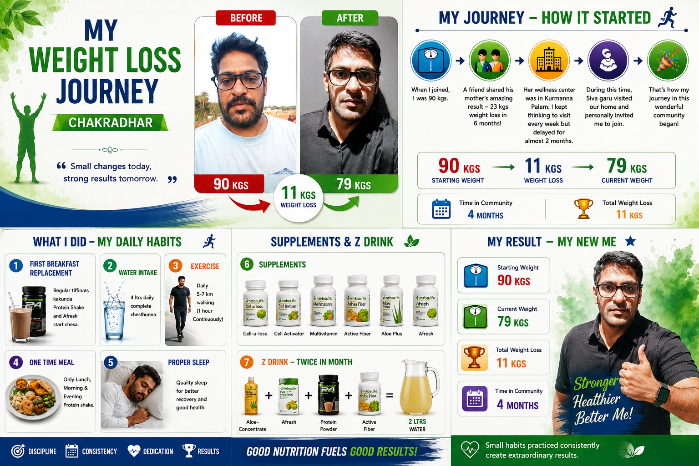

My Journey to a Healthier Life

Five Months That Changed My Life
It's been almost five months since I joined this wellness community, and the journey has been nothing short of life-changing. The first three months were especially incredible. I developed healthy habits, became more consistent, and discovered a lifestyle that made me feel happier and more energetic every day.
This isn't just a story about losing weight—it's about gaining a healthier life.
How It All Started
When I began this journey, I weighed 90 kg.
The inspiration came from a friend who shared his mother's transformation—she had lost 23 kg in just six months. Her wellness center is in Kurmannapalem. Although I was impressed, I kept postponing my visit for almost two months.
Everything changed when Siva Garu visited our home and personally invited me to join. That simple invitation became the turning point in my life.
The Habits That Changed Me
Success didn't happen overnight. It came from building simple, consistent daily habits.
- 🚶 Walked 5–7 km every day (about one hour of continuous walking)
- 🥤 Replaced breakfast with Afresh and a Protein Shake
- 💧 Drank around 4 liters of water every day
- 🍛 Ate one balanced lunch with less rice, more vegetables, curd, and salads
- 😴 Prioritized proper sleep for recovery and overall health
- 💊 Followed my recommended nutrition plan, including Cell-u-loss, Cell Activator, Multivitamin, Activated Fiber, Aloe Plus, and Afresh
- 🍹 Twice a month, prepared my special Z Drink using Aloe Concentrate, Afresh, Protein Powder, and Active Fiber
None of these habits felt difficult once they became part of my daily routine.
The Results
Over the last 3–4 months, I lost 11 kg, reducing my weight from 90 kg to 79 kg.
But the biggest transformation wasn't the number on the weighing scale.
Today I feel:
- 😊 Happier
- ⚡ More energetic
- 🏃 More active and flexible
- ❤️ Healthier than I have felt in years
I can walk longer, play cricket, run, bend down, climb stairs, and enjoy life with renewed confidence.
More Than Weight Loss
This journey taught me that
🌱
consistency beats perfection.
You don't have to be perfect every day. You just need to keep going, even when things aren't perfect.
Every healthy choice I make today is an
💚
investment in my future
Financial investments grow your wealth. Health investments grow your life.
The return is a stronger, happier, and more energetic life. ⭐
.
My 💗 heart tells Today, my heart feels genuinely happy—and I choose to listen to it. Deep inside, I feel as if every organ in my body is saying, “Thank you for taking care of me.” Every healthy meal, every workout, and every positive habit is a gift to my future self. This journey has given me more than physical transformation; it has given me energy, confidence, and peace of mind. And the greatest reward is knowing that when I’m healthy and happy, my family shares that happiness too. me to continue this journey because when I am healthy and happy, my family is happy too.
This is only the beginning.